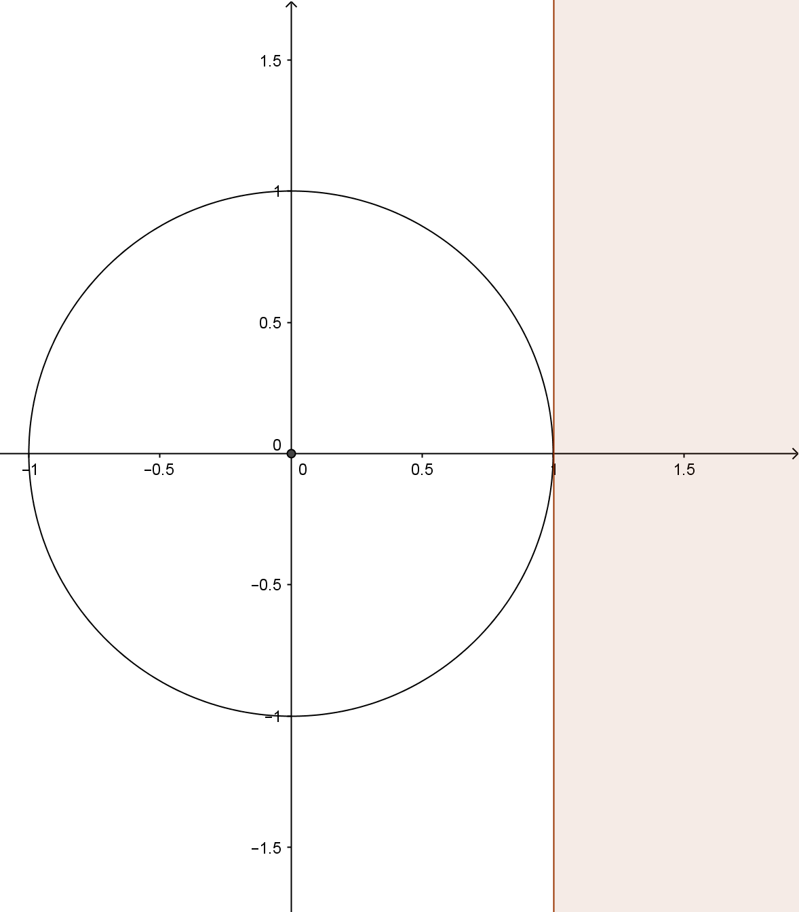
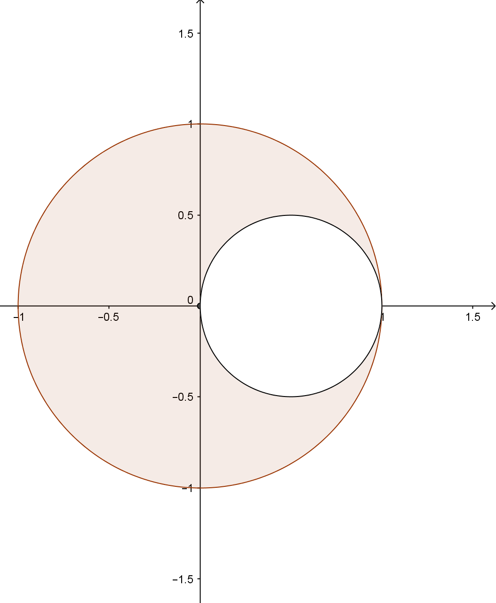
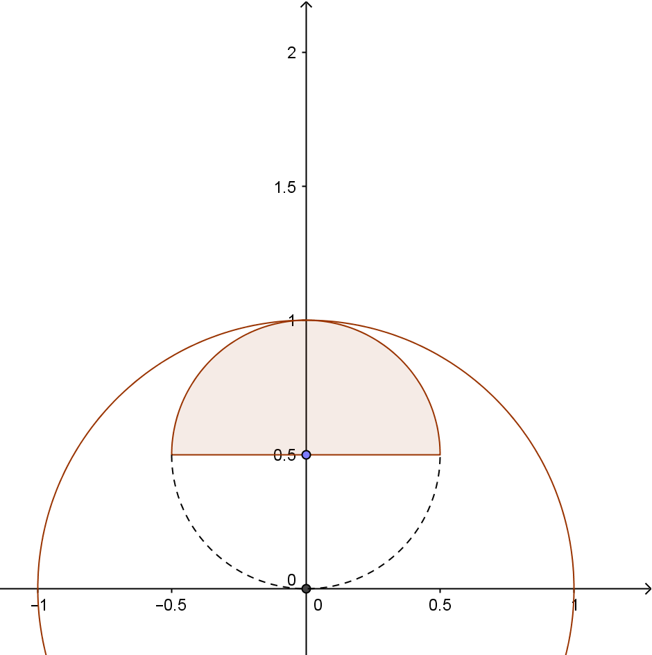

Aufgabe 11.4
Skizzieren Sie in den Figuren das inverse Bild der schraffierten Fläche. Der Einheitskreis um den Ursprung ist dabei der Inversionskreis.
| (a) | (b) | (c) |
|
 |
 |
 |
- Der Einheitskreis hat Radius 1 und Mittelpunkt im Ursprung
- Nutzen Sie $|OP| \cdot |OP'| = 1$
- Bereiche nahe am Ursprung werden weit nach aussen abgebildet
- Beachten Sie die Umkehrung von innen und aussen
Lösung als Bild und mit Erklärung im digitalen Material.
Im Video: Etappe 3 · Bilder von Geraden & Kreisen bei 2:04